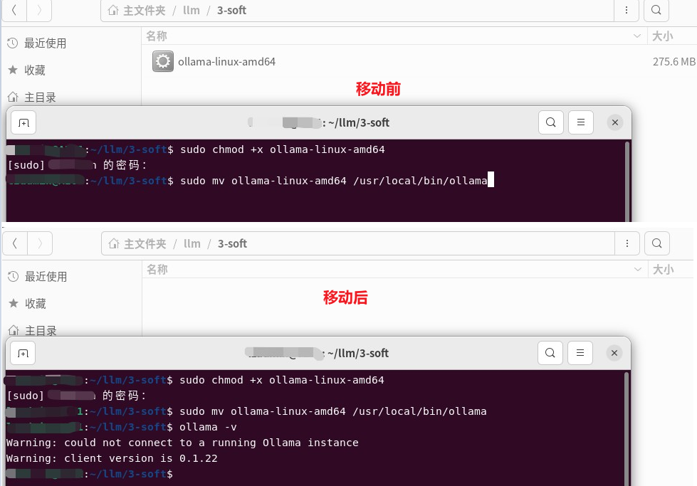
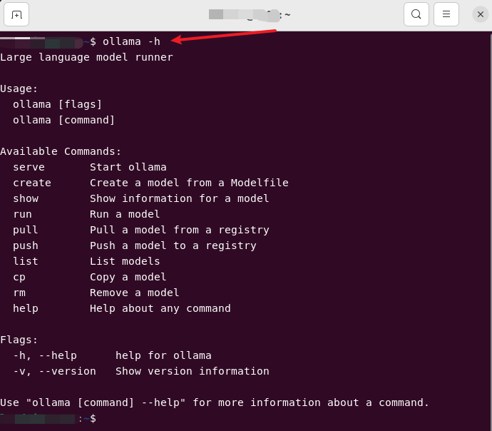
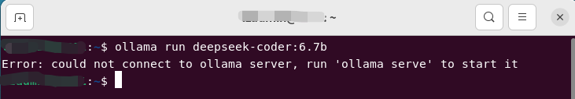
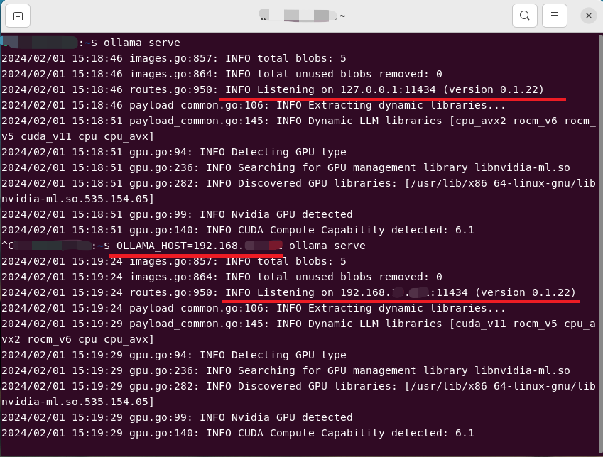
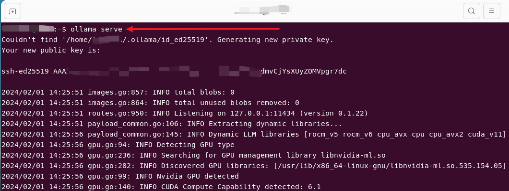
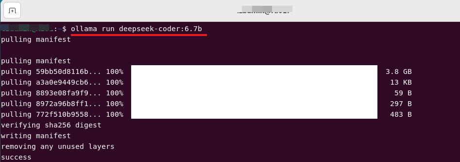
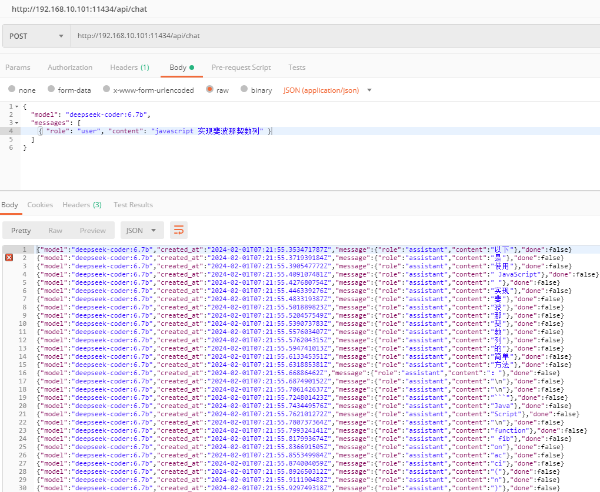

Ollama
官网：Ollama
安装
Linux
这里的测试环境是：Ubuntu 22.04 + Intel(R)Xeon(R) CPU E5-2699 v4 2.20GHZ + RAM（512GB）
官网推荐
官网给的 Linux 的安装方式很简单，只需一个命令，如下：
curl https://ollama.ai/install.sh | sh
尝试了一下，安装失败了……看了一下原因，上面的脚本会在
自己动手
这点小事儿不能阻挡咱的脚步，是不？于是就看了一下上面的脚本，发现文件下载地址是这个：Releases · ollama/ollama · GitHub。于是就下了最新版本的（2024-02-01，版本是 0.1.22）：
问了一下大模型，下载了文件之后怎么安装，下面是他的回复：
看了他的回复之后，瞬间明白了。这不就相当于 exe 嘛，不过这里是免安装的
sudo chmod +x ollama-linux-amd64
sudo mv ollama-linux-amd64 /usr/local/bin/ollama

跑起来
先看看他有哪些命令

看了这个deepseek-coder之后，选一个合适大小的大模型直接走起：
ollama run deepseek-coder:6.7b

启动服务
按照上面的指示，需要先启动服务
# 默认监听 127.0.0.1
ollama serve
# 指定监听的IP地址
OLLAMA_HOST=192.168.x.x ollama serve

注意：上面的截图并不是第一次执行

拉取模型
# 拉取一个模型
ollama pull deepseek-coder:6.7b
# 运行一个模型。如果本地没有，会先拉取。之后进入命令行交互模式
ollama run deepseek-coder:6.7b


客户端
curl
curl http://localhost:11434/api/generate -d '{
"model": "deepseek-coder:6.7b",
"prompt":"javascript 实现斐波那契数列"
}'
curl http://localhost:11434/api/chat -d '{
"model": "deepseek-coder:6.7b",
"messages": [
{ "role": "user", "content": "javascript 实现斐波那契数列" }
]
}'
Postman
